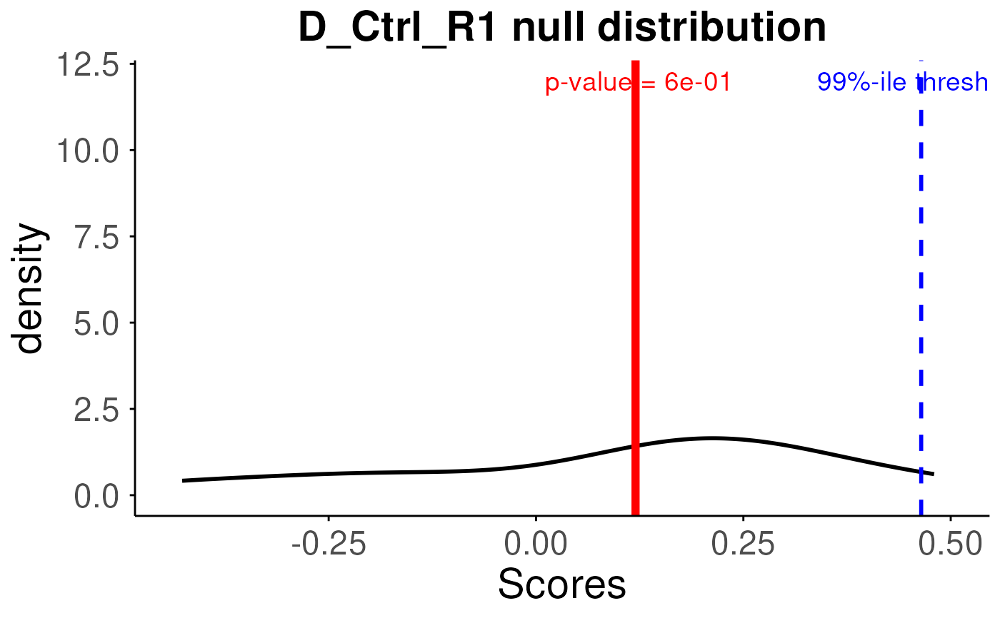

R/plot.R
plotNull.RdThis function takes the results from function generateNull()
and plots the density curves of permuted scores for the provided samples via
sampleNames parameter. It can plot null distribution(s) for a single
sample or multiple samples.
plotNull(
permuteResult,
scoredf,
pvals,
sampleNames = NULL,
cutoff = 0.01,
textSize = 2,
labelSize = 5
)A matrix, null distributions for each sample generated
using the generateNull() function
A dataframe, singscores generated using the simpleScore()
function
A vector, estimated p-values using the getPvals() function
permuteResult,scoredf and pvals are the results for the same samples.
A character vector, sample IDs for which null distributions will be plotted
numeric, the cutoff value for determining significance
numeric, size of axes labels, axes values and title
numeric, size of label texts
a ggplot object
ranked <- rankGenes(toy_expr_se)
scoredf <- simpleScore(ranked, upSet = toy_gs_up, downSet = toy_gs_dn)
# find out what backends can be registered on your machine
BiocParallel::registered()
#> $MulticoreParam
#> class: MulticoreParam
#> bpisup: FALSE; bpnworkers: 1; bptasks: 0; bpjobname: BPJOB
#> bplog: FALSE; bpthreshold: INFO; bpstopOnError: TRUE
#> bpRNGseed: 1; bptimeout: NA; bpprogressbar: FALSE
#> bpexportglobals: TRUE; bpexportvariables: FALSE; bpforceGC: FALSE
#> bpfallback: TRUE
#> bplogdir: NA
#> bpresultdir: NA
#> cluster type: FORK
#>
#> $SnowParam
#> class: SnowParam
#> bpisup: FALSE; bpnworkers: 4; bptasks: 0; bpjobname: BPJOB
#> bplog: FALSE; bpthreshold: INFO; bpstopOnError: TRUE
#> bpRNGseed: ; bptimeout: NA; bpprogressbar: FALSE
#> bpexportglobals: TRUE; bpexportvariables: TRUE; bpforceGC: FALSE
#> bpfallback: TRUE
#> bplogdir: NA
#> bpresultdir: NA
#> cluster type: SOCK
#>
#> $SerialParam
#> class: SerialParam
#> bpisup: FALSE; bpnworkers: 1; bptasks: 0; bpjobname: BPJOB
#> bplog: FALSE; bpthreshold: INFO; bpstopOnError: TRUE
#> bpRNGseed: ; bptimeout: NA; bpprogressbar: FALSE
#> bpexportglobals: FALSE; bpexportvariables: FALSE; bpforceGC: FALSE
#> bpfallback: FALSE
#> bplogdir: NA
#> bpresultdir: NA
#>
# the first one is the default backend, and it can be changed explicitly.
permuteResult = generateNull(upSet = toy_gs_up, downSet = toy_gs_dn, ranked,
B =10, seed = 1,useBPPARAM = NULL)
# call the permutation function to generate the empirical scores
#for B times.
pvals <- getPvals(permuteResult,scoredf)
# plot for all samples
plotNull(permuteResult,scoredf,pvals,sampleNames = names(pvals))
#> Using as id variables
#plot for the first sample
plotNull(permuteResult,scoredf,pvals,sampleNames = names(pvals)[1])
